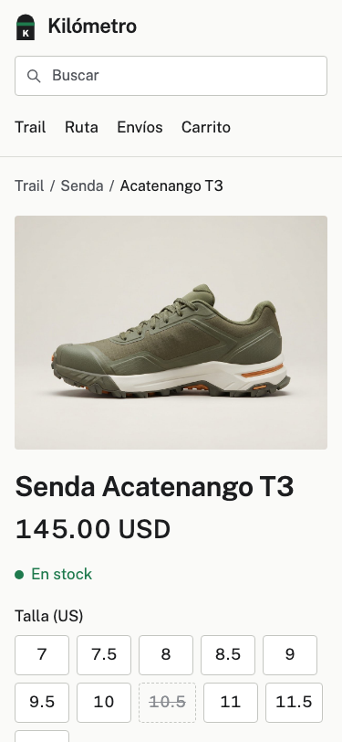
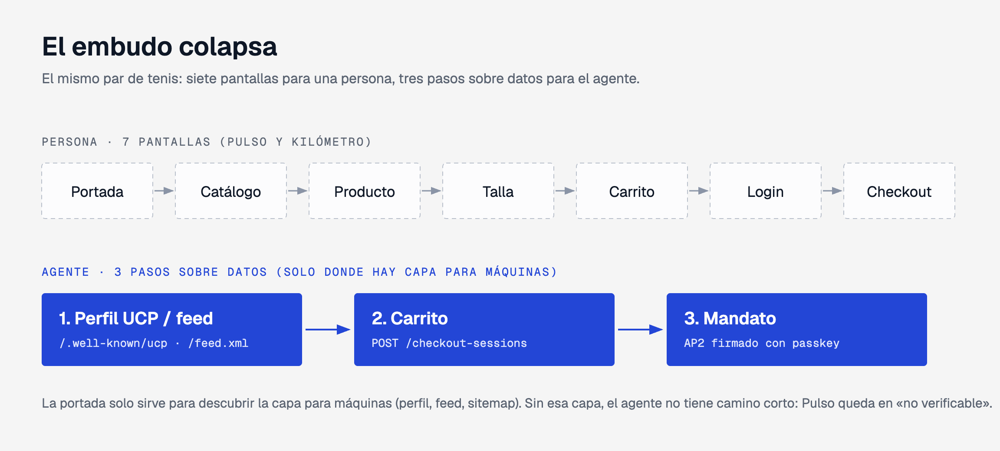
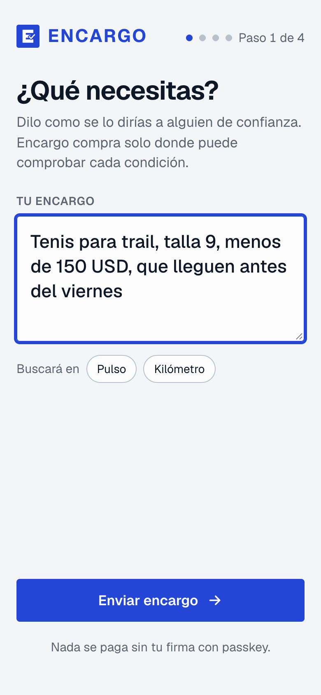
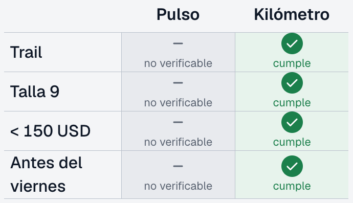
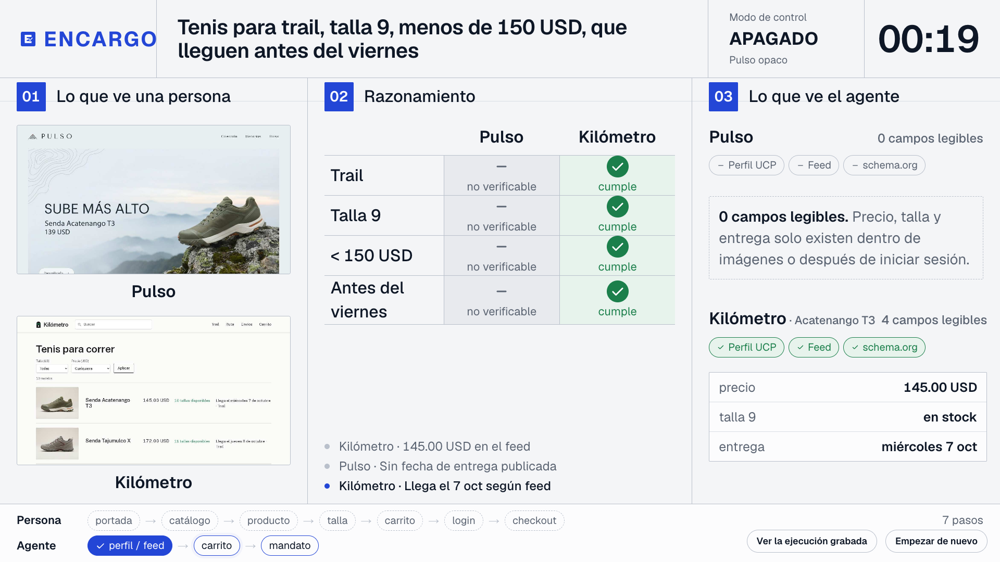
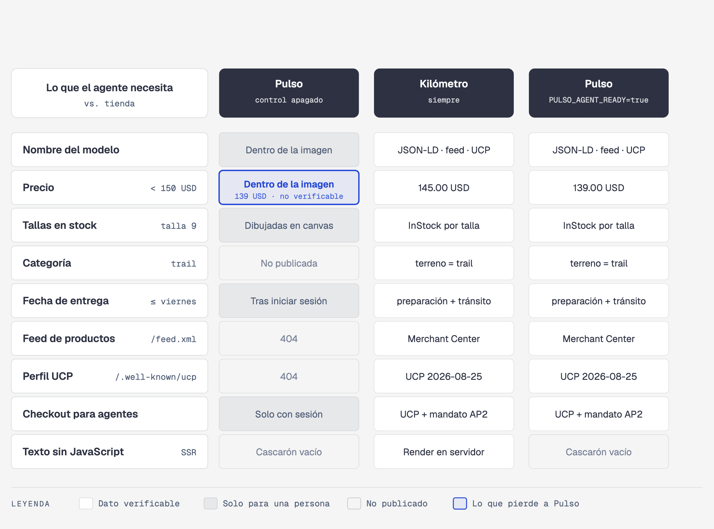
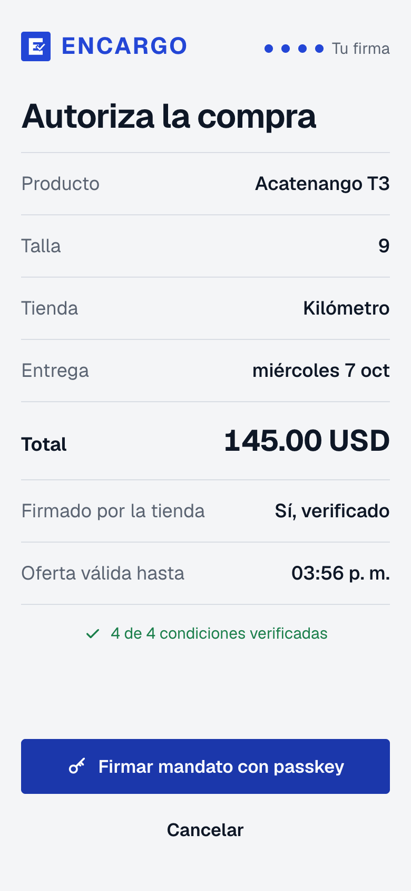
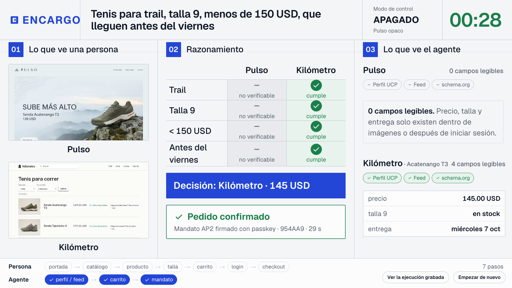

1. Qué vas a lograr y cómo se ve al final
En este codelab práctico aprenderás a diagnosticar si una tienda en línea puede ser leída y comprada por un agente de IA, probarás la Auditoría de 8 Puntos con ejemplos comentados y notas de negocio, y completarás un tutorial guiado de reparación para llevar un comercio desde 0/8 (invisible para agentes) hasta 8/8 (compra completada en 3 pasos con autorización biométrica Passkey).
Encargo Auditor & Fixer Lab) incluido en la carpeta demo-app/.2. Probar la auditoría de 8 puntos sobre 3 tiendas de ejemplo precargadas (
0/8 Pulso Outdoor, 3/8 Café Nube y 8/8 Kilómetro) entendiendo las notas de negocio detrás de cada punto.3. Reparar paso a paso una tienda inicialmente en
0/8 aplicando las 4 correcciones guiadas (robots.txt → JSON-LD ProductGroup + OfferShippingDetails → /feed.xml + SSR → /.well-known/ucp + AP2 Passkey) hasta ver cómo el agente aprueba el pedido en 8/8.App Demo de referencia publicada en vivo: Puedes probar en cualquier momento el laboratorio funcionando en
https://encargo-auditor-lab-611681112050.us-central1.run.app para comparar tu progreso con el resultado esperado.
Así se ve el resultado final que vas a lograr
Al completar las 4 correcciones del laboratorio, tu tienda alcanza una puntuación de 8/8 en la tabla central, expone todos sus datos verificables en la columna izquierda y logra que el Simulador de Compra del Agente (columna derecha) apruebe el pedido en 3 pasos:

El problema de negocio: La historia de Pulso (0/8) y Kilómetro (8/8)
Imagina que un martes por la noche un comprador ve en Instagram el anuncio de unas botas impermeables para subir el volcán Acatenango el fin de semana. En vez de abrir siete pantallas en el navegador, le delega la tarea a su asistente de IA:
El agente visita dos tiendas que venden el mismo calzado:
<canvas> y el envío en el paso 5 del carrito.

2. Cómo iniciar y usar el Laboratorio Interactivo (`demo-app/`)
Este codelab incluye su propio laboratorio ejecutable en Node.js sin dependencias externas pesadas (demo-app/) y también puedes apoyarte en la aplicación web demostrativa de Encargo.
Paso A: Levantar el Laboratorio de Auditoría y Reparación en tu máquina
Abre una terminal en la carpeta encargo/codelab/demo-app y ejecuta el servidor local y su suite de pruebas:
cd /Users/ykro/code/charlas/2027/encargo/codelab/demo-app # 1. Verificar que los 4 tests del auditor y del tutorial pasen al 100% node --test audit.test.mjs # 2. Iniciar el servidor interactivo en http://localhost:4324 node server.mjs
Al abrir http://localhost:4324 en tu navegador, encontrarás el Laboratorio dividido en 3 columnas para que entiendas de un vistazo qué ocurre por dentro cuando un agente visita una tienda:
- Columna 1 (Izquierda) — Humano vs Lectura del Agente: Arriba muestra cómo luce la tarjeta visual para una persona (banners, precios de oferta, avisos promocionales) y abajo muestra exactamente qué campos logró extraer el agente de IA sin intervención humana.
- Columna 2 (Centro) — Tabla de Auditoría de 8 Puntos con Notas: Evalúa punto por punto la tienda y te entrega dos notas en español claro por cada fila: la Nota de Diagnóstico (qué encontró o qué faltó) y la Nota de Negocio (por qué ese punto te hace ganar o perder ventas).
- Columna 3 (Derecha) — Simulador de Compra del Agente: Toma el encargo del comprador («Botas Acatenango T3, talla 42, presupuesto <= Q1,290, entrega antes del viernes») y evalúa si el agente rechaza la tienda o aprueba la compra.
Paso B: Cómo observar el flujo completo en la plataforma Encargo
Cuando un comprador envía su encargo desde el teléfono, el agente inspecciona las tiendas candidatas en paralelo y llena su bitácora de razonamiento antes de pedir la firma del usuario:



3. Guía de la Auditoría de 8 Puntos: Qué mide cada punto y por qué importa
Para que cualquier equipo de e-commerce, marketing o tecnología sepa exactamente qué ajustar en su tienda, el auditor evalúa 8 puntos concretos organizados en las tres etapas de una compra delegada a un agente:

Tabla de referencia: Los 8 puntos y sus notas de negocio
| # | Punto Evaluado y Etapa | Qué busca el Agente de IA | Qué ocurre si falla | Nota de Negocio |
|---|---|---|---|---|
| 1 | Permiso en robots.txt a agentes de compraEtapa 1 · Descubrir |
Reglas Allow: / para buscadores de asistentes (OAI-SearchBot, Claude-SearchBot, Google-Extended). |
El agente respeta la prohibición en robots.txt y ni siquiera entra a tu tienda. |
Puedes bloquear bots de entrenamiento masivo si lo deseas, pero nunca bloquees a los agentes de búsqueda que traen clientes listos para comprar. |
| 2 | Acceso HTTP directo sin bloqueo anti-agente Etapa 1 · Descubrir |
Respuesta 200 OK limpia sin exigir resolver acertijos visuales para ver el catálogo público. |
El agente descarta la tienda en menos de 200ms y pasa al siguiente comercio. | Protege las rutas de pago contra abuso, pero deja las fichas de producto abiertas a lectura rápida. |
| 3 | Ficha JSON-LD ProductGroup con stock por tallaEtapa 1 · Descubrir |
Un bloque schema.org/ProductGroup con hasVariant donde cada talla tiene su propio SKU, precio y estado InStock o OutOfStock. |
El agente sabe que vendes el modelo, pero como ignora si la talla 42 está disponible, abandona la compra. | Es la causa #1 de descarte en moda y calzado: declarar "En Stock" general sin desglosar variantes por talla. |
| 4 | Costo y días de entrega en la ficha (OfferShippingDetails)Etapa 1 · Descubrir |
Días de preparación (handlingTime), días de tránsito (transitTime) y tarifa de envío dentro del bloque JSON-LD. |
El agente no puede garantizar que el pedido llegará antes del viernes y descarta el comercio. | Esconder el costo y tiempo de envío hasta el paso 5 del carrito provoca el 100% de abandono cuando el cliente pide fecha límite. |
| 5 | Nombre y precio visibles en el HTML inicial (SSR) Etapa 1 · Descubrir |
Que el título, precio y disponibilidad vengan escritos en el HTML inicial del servidor, no encerrados en un JPG ni en un contenedor vacío. | El lector rápido del agente recibe una página en blanco (<div id="root"></div>) sin precios. |
Además de ayudar a los agentes de IA, renderizar precios en el HTML inicial mejora el posicionamiento en buscadores. |
| 6 | Catálogo rápido en /feed.xmlEtapa 1 · Descubrir |
Un archivo XML/JSON (formato Google Merchant Center) con todos tus productos, precios, tallas y envíos. | El agente tiene que rastrear decenas de páginas lentas para comparar tu catálogo. | Si ya haces campañas de catálogo en Google Shopping o Meta, tu tienda ya genera este archivo; solo debes dejarlo accesible en /feed.xml. |
| 7 | Cotización en 1 paso vía /.well-known/ucpEtapa 2 · Cotizar |
Un manifiesto en /.well-known/ucp donde el agente envía el SKU y recibe una cotización cerrada con checkout_hash. |
El agente tendría que intentar llenar 7 pantallas de formularios HTML (alta fricción y propenso a romperse). | El protocolo UCP convierte un embudo de 7 pantallas en una sola llamada directa de cotización. |
| 8 | Autorización biométrica Passkey (AP2 CartMandate)Etapa 3 · Autorizar |
Que la tienda verifique un mandato criptográfico firmado con la huella o rostro del comprador (Passkey) sobre el checkout_hash. |
Sin autorización verificable, el cliente tendría que compartir su tarjeta o el comercio asumir riesgo de contracargo. | Con AP2 el agente nunca ve la tarjeta del cliente y la tienda recibe prueba matemática del consentimiento del comprador. |
4. Probando la Auditoría con 3 Ejemplos (`0/8`, `3/8` y `8/8`) y sus Notas
En la barra superior del Laboratorio Interactivo (`http://localhost:4324`) encontrarás los botones para cargar las 3 tiendas de ejemplo precargadas. Vamos a probar cada una y a revisar con lupa sus notas de negocio.
Ejemplo A: 0/8 Pulso Outdoor — Tienda visual en Instagram pero opaca al agente
Puntuación: 0 / 8 · Veredicto del Simulador: TIENDA RECHAZADA (0/8)
Haz clic en el botón «Ejemplo A: 0/8 Pulso Outdoor (Opaca)» del laboratorio. Verás cómo los 8 puntos aparecen marcados en rojo con la explicación exacta de cada fallo:

Notas clave que debes observar en Pulso Outdoor:
- Por qué falla el precio: El precio de oferta (
Q1,190) está dibujado dentro de una imagen promocional JPG y el HTML inicial es un cascarón vacío (<div id="root"></div>). - Por qué falla la talla: El selector de tallas se dibuja en un
<canvas>interactivo sin etiquetasJSON-LD ProductGroup. - Impacto comercial comprobado: En el experimento controlado de 78 corridas donde Pulso estuvo en
0/8frente a un competidor en8/8, Pulso obtuvo 0 compras de 78 a pesar de ser Q60 más barata.
Ejemplo B: 3/8 Café Nube — Catálogo parcial que oculta envío y stock por variante
Puntuación: 3 / 8 · Veredicto del Simulador: TIENDA RECHAZADA (3/8)
Ahora haz clic en «Ejemplo B: 3/8 Café Nube (Parcial)». Este ejemplo es fundamental porque representa a la gran mayoría de tiendas actuales en plantillas básicas de Shopify o WooCommerce:
- Los 3 puntos que SÍ aprueba:
- Punto 1 (
robots.txt): Permite el acceso aOAI-SearchBotyClaude-SearchBot. - Punto 2 (Acceso HTTP): Entrega la página rápido sin bloqueos.
- Punto 5 (HTML inicial SSR): Muestra el nombre de las botas y su precio base (
Q1,220.00 GTQ) en texto legible, además de un bloqueProductbásico.
- Punto 1 (
- Por qué el Agente de IA de todos modos RECHAZA la compra en Café Nube:
- Fallo en Punto 3 (Sin stock por variante): Su código dice que el producto general está
InStock, pero esconde qué tallas existen detrás de un menú desplegable. El agente veAMBIGUO (Dice InStock general pero oculta tallas)y no se arriesga a pedir una talla 42 agotada. - Fallo en Punto 4 (Sin días ni costo de envío): Obliga a llenar el carrito hasta el paso 5 para revelar cuándo llega. Como el cliente pidió «que llegue antes del viernes», el agente descarta a Café Nube.
- Fallo en Punto 3 (Sin stock por variante): Su código dice que el producto general está
Ejemplo C: 8/8 Kilómetro — Tienda lista para humanos y agentes
Puntuación: 8 / 8 · Veredicto del Simulador: COMPRA COMPLETADA (8/8)
Haz clic en «Ejemplo C: 8/8 Kilómetro (Lista)». Observa cómo cambian las tres columnas del laboratorio:

- Lectura instantánea del Agente: Extrae el SKU exacto
KM-ACAT-T3-42para la talla 42 en estadoInStock, confirma el precioQ1,250.00 GTQy verifica0 días de preparación + 1 día de tránsito(llega el miércoles, antes del viernes). - Cierre en 3 pasos: En la columna derecha, el Simulador emite el recibo confirmado
ORD-ENC-2027-808firmado conWebAuthn Passkey.
5. Tutorial Paso a Paso (Parte 1): Repara tu tienda de `0/8` a `6/8`
Ahora pasamos del diagnóstico a la acción. En el laboratorio (http://localhost:4324), haz clic en el botón morado «Tutorial Paso a Paso: Repara de 0/8 a 8/8». Se abrirá la cinta interactiva con las 4 correcciones guiadas sobre Pulso Outdoor (que inicia en 0/8).
robots.txt, JSON-LD y /feed.xml) compatibles con Shopify, WooCommerce, Magento, Next.js o cualquier sitio HTML.
Corrección 1: Abrir /robots.txt a agentes de compra (Sube de 0/8 a 2/8)
Marca la casilla «CORRECCIÓN 1 · SUBE A 2/8» en el laboratorio. Esta receta reemplaza el bloqueo total por una regla que permite la entrada a los asistentes de búsqueda y compra:
# Permitir agentes de búsqueda y asistentes de compra cuando un cliente consulta en vivo User-agent: OAI-SearchBot Allow: / User-agent: Claude-SearchBot Allow: / User-agent: Google-Extended Allow: / User-agent: PerplexityBot Allow: / Sitemap: https://pulso.ejemplo.gt/sitemap.xml
Qué cambia en el laboratorio al activar la Corrección 1: La puntuación sube a 2/8. El agente ya puede entrar a tu tienda, pero todavía sigue descartándola porque no encuentra el stock por talla ni los días de envío.
Corrección 2: Inyectar la ficha JSON-LD con tallas y envío (Sube de 2/8 a 4/8)
Marca ahora la casilla «CORRECCIÓN 2 · SUBE A 4/8». Esto inyecta en el <head> de la página de producto el bloque schema.org/ProductGroup con cada talla desglosada y su promesa de entrega (OfferShippingDetails):
<script type="application/ld+json">
{
"@context": "https://schema.org",
"@type": "ProductGroup",
"name": "Botas Acatenango T3 Impermeables",
"productGroupID": "PULSO-ACAT-T3",
"brand": { "@type": "Brand", "name": "Senda" },
"variesBy": ["https://schema.org/size"],
"hasVariant": [
{
"@type": "Product",
"sku": "PULSO-ACAT-T3-41",
"size": "41",
"offers": {
"@type": "Offer",
"price": "1190.00",
"priceCurrency": "GTQ",
"availability": "https://schema.org/OutOfStock"
}
},
{
"@type": "Product",
"sku": "PULSO-ACAT-T3-42",
"name": "Botas Acatenango T3 Impermeables - Talla 42 (US 9)",
"size": "42",
"offers": {
"@type": "Offer",
"price": "1190.00",
"priceCurrency": "GTQ",
"availability": "https://schema.org/InStock",
"shippingDetails": {
"@type": "OfferShippingDetails",
"shippingRate": { "@type": "MonetaryAmount", "value": "0.00", "currency": "GTQ" },
"deliveryTime": {
"@type": "ShippingDeliveryTime",
"handlingTime": { "@type": "QuantitativeValue", "minValue": 0, "maxValue": 0, "unitCode": "DAY" },
"transitTime": { "@type": "QuantitativeValue", "minValue": 1, "maxValue": 1, "unitCode": "DAY" }
}
}
}
}
]
}
</script>
Qué cambia en el laboratorio al activar la Corrección 2: La puntuación sube a 4/8 y en el Simulador de la derecha verás que las primeras 3 condiciones del comprador (Producto y presupuesto Q1,190, Talla 42 en stock y Entrega en 1 día hábil antes del viernes) pasan inmediatamente a estado VERIFICADO.
Corrección 3: Publicar /feed.xml y precios en el HTML inicial SSR (Sube de 4/8 a 6/8)
Marca la casilla «CORRECCIÓN 3 · SUBE A 6/8». Con esto el servidor incluye el nombre, precio y talla directamente en el cuerpo del HTML inicial y publica el archivo rápido /feed.xml:
<?xml version="1.0" encoding="UTF-8"?>
<rss version="2.0" xmlns:g="http://base.google.com/ns/1.0">
<channel>
<title>Pulso Outdoor — Catálogo Rápido</title>
<item>
<g:id>PULSO-ACAT-T3-42</g:id>
<title>Botas Acatenango T3 Impermeables - Talla 42</title>
<g:price>1190.00 GTQ</g:price>
<g:availability>in_stock</g:availability>
<g:size>42</g:size>
</item>
</channel>
</rss>
Qué cambia al llegar a 6/8: El veredicto del agente cambia de rojo a azul: CATÁLOGO VERIFICADO (6/8) · FALTA UCP/AP2. Tu tienda ya es recomendada por el agente como la opción con mejor precio verificable.
6. Tutorial Paso a Paso (Parte 2): De `6/8` a `8/8` y Compra Aprobada
Para que el agente no solo recomiende tu tienda sino que pueda cerrar el pedido en 3 pasos sin pedirle al usuario que llene formularios ni escriba su tarjeta de crédito, activamos la cuarta y última corrección.
Corrección 4: Habilitar /.well-known/ucp y autorización con Passkey (AP2 CartMandate) → Sube a 8/8
Marca la cuarta casilla «CORRECCIÓN 4 · SUBE A 8/8» en la cinta del tutorial (o presiona el botón «Activar las 4 Correcciones (8/8)»). Esta receta publica el manifiesto UCP con soporte para mandatos firmados con Passkey:
{
"ucp_version": "2026-08-25",
"merchant": {
"id": "pulso-outdoor-gt",
"name": "Pulso Outdoor",
"currency": "GTQ"
},
"services": [
{
"id": "dev.ucp.shopping",
"endpoint": "https://pulso.ejemplo.gt/api/ucp/checkout",
"capabilities": ["catalog.lookup", "cart", "checkout"],
"extensions": ["fulfillment", "dev.ucp.common.payment.ap2_mandate"]
}
]
}

Cómo vive el comprador la autorización con su huella (Passkey AP2)
Observa lo que ocurre cuando la tienda alcanza 8/8:
- Cotización cerrada (UCP): El agente pide precio final para el SKU
PULSO-ACAT-T3-42y recibe un resumen único (checkout_hash) que congela producto, talla 42, entrega en 1 día y total deQ1,190.00 GTQ. - Firma con Passkey en el teléfono (AP2): El agente jamás tiene permiso para pagar solo. En el teléfono del cliente aparece la solicitud para firmar ese carrito exacto con Touch ID o Face ID.
- Orden emitida sin exponer tarjetas: La tienda valida la firma matemática y confirma el pedido en segundos.


7. Práctica Rápida `0/8` → `8/8` y Plan de Acción para el Lunes
También puedes practicar directamente aquí marcando cualquiera de los 8 puntos o cargando las 4 etapas del tutorial para repasar qué lee y qué decide el agente en cada nivel:
Hoja de ruta práctica para aplicar el lunes en tu comercio
| Etapa | Corrección del Tutorial | Salto en el Auditor | Tiempo Estimado | Responsable |
|---|---|---|---|---|
| Paso 1 · Lunes AM | Abrir /robots.txt a OAI-SearchBot, Claude-SearchBot y Google-Extended sin bloquear la lectura HTTP de fichas de producto. |
De 0/8 a 2/8 | 30 minutos | Webmaster / SEO / DevOps |
| Paso 2 · Lunes PM | Inyectar la ficha JSON-LD ProductGroup con stock por variante/talla (hasVariant) y OfferShippingDetails con tarifa y días de entrega. |
De 2/8 a 4/8 | 1 tarde | E-Commerce Manager / Frontend |
| Paso 3 · Martes | Publicar el catálogo rápido /feed.xml y asegurar que el nombre y precio vengan en el HTML inicial (SSR). |
De 4/8 a 6/8 | Medio día | E-Commerce Manager / Integrador |
| Paso 4 · Siguiente Sprint | Habilitar cotización en 1 paso (/.well-known/ucp) y verificación de mandato biométrico con Passkey (AP2 CartMandate). |
De 6/8 a 8/8 (Compra aprobada) | Piloto de checkout | Ingeniería / Pagos |
0/8 a 8/8.